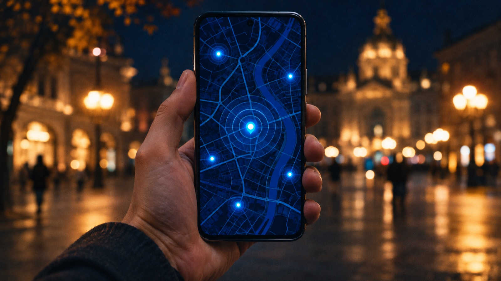

Blog
Notes from the map.
Stories, guides and ideas from the people building ReChord.
Why we built ReChord
Everything we post slides down a timeline and disappears. But the moments that matter happened somewhere. We wanted to give them their address back.

How ReChord works: a complete guide
Recording, pinning, privacy, covers, exploring the map, sharing and likes: everything you can do in ReChord today, step by step.
Why voice? What a few seconds of sound remembers
Photos show what a place looked like. A voice tells you what it felt like to be there. Why we built ReChord around sound.